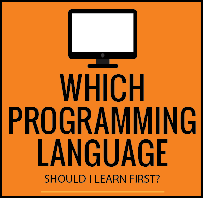

HTML and CSS are the building blocks for web design. They’re also the perfect entry-point for anyone interested in Front-End Design. To be honest, it’s hard to think that you’d be able to build a website without knowledge of these two. Granted, it would be great to be proven wrong, but we still think this is a really useful competency to have. Have a crack at the Treehouse and Codecademy tutorials and supplement your understanding with the very technical but extremely useful w3schools tutorials.
HTML & CSS
JavaScript
JavaScript and jQuery make the web jazzy. JavaScript is the programming language of HTML and the web. jQuery is the most popular JavaScript library so it’s worth having a gander of the Codecademy and Treehouse tutorials. The Human Javascript tutorial gives a brief history of JavaScript whilst also encouraging you to create human readable code. It’s a great discipline to pick up and one that will definitely hold you in good stead.
Python is a powerful language used to build sites like Dropbox and YouTube. There are endless (not literally, but lots) of applications. In order to really get your head around Python, it’s worth investing time to learning it step-by-step. Granted, you won’t learn ALL of Python, but this book (available free and online) is the perfect way to ground your understanding. It’s worth completing the Codecademy or Treehouse course first though.
Python
Ruby
Ruby was written in the mid-1990s and focuses on simplicity and productivity. Apparently it’s ‘elegant’, all that means is that it’s natural to read and easy to write. Whilst some programming languages feel like they’re written for computers, Ruby feels like it was written with humans in mind. There are great resources online, but like Python, it’s worth getting your teeth sunk into a step-by-step guide. The tutorial in the link does just that.
Ruby on Rails is a web framework built in the early part of this century by a Danish engineer in his spare time. It’s gone on to become one of the most widely used custom web application frameworks. There’s a strong community of users which means that there’s a lot people writing about it, solving other people’s problems and creating really useful ‘gems’. Michael Hartl has written what’s considered to be the seminal guide for Ruby on Rails which can be found in the link.
Ruby on Rails
This might be your first hackday. Or you're just curious about programming and aren't quite sure where to start. Click on the button on the right to link to an infographic by Carl Cheo. It's laid out as a question and answer flowchart aimed at helping you figure out which language will suit you most. There are also some great Lord of the Rings references for the fans out there.
From choosing which language to start with to learning a new skill, this page will get you started.
Hackday Resources